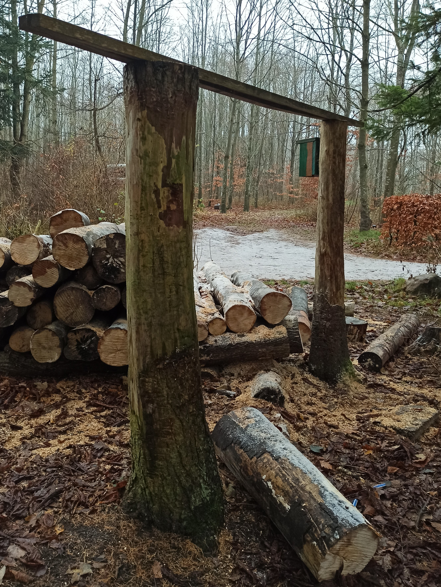
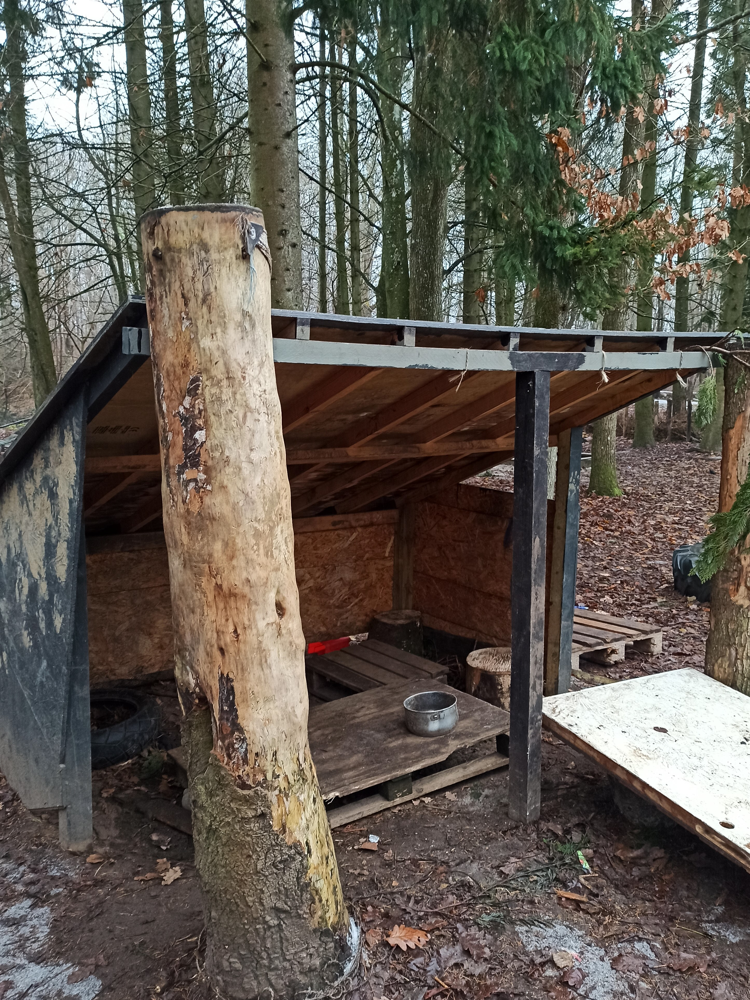
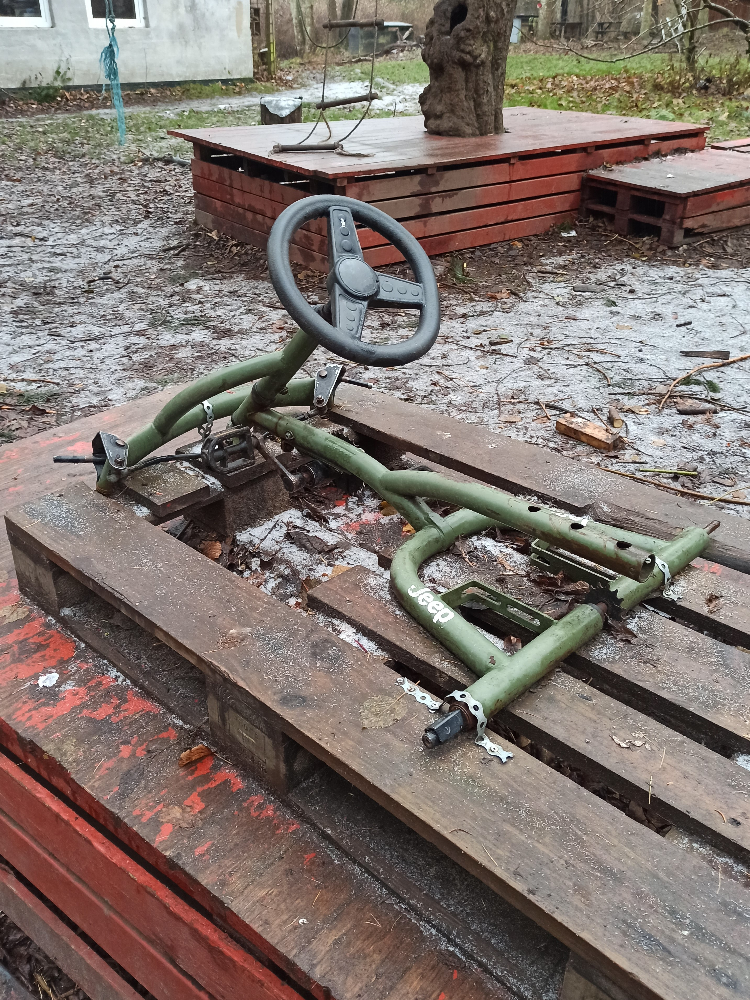
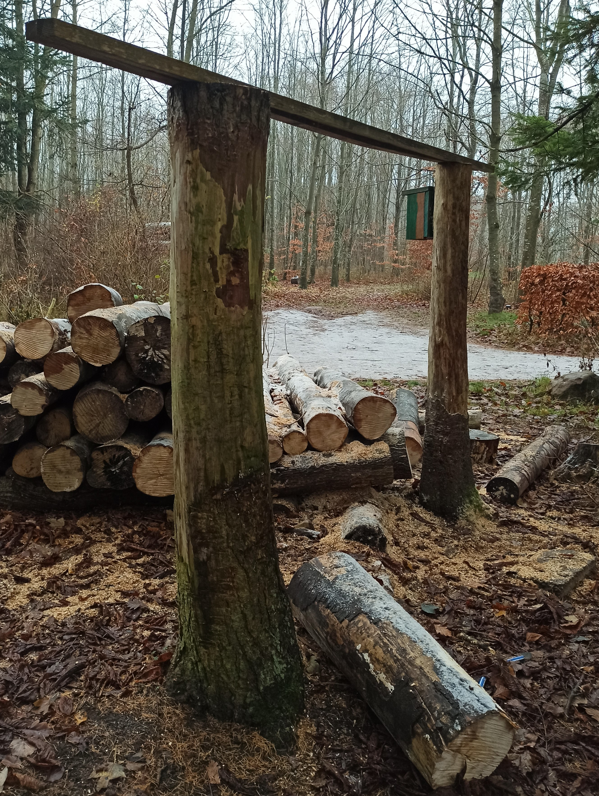
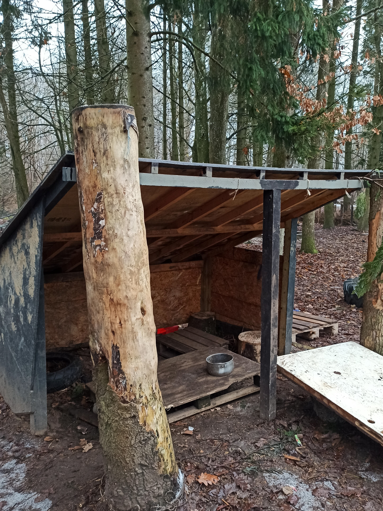
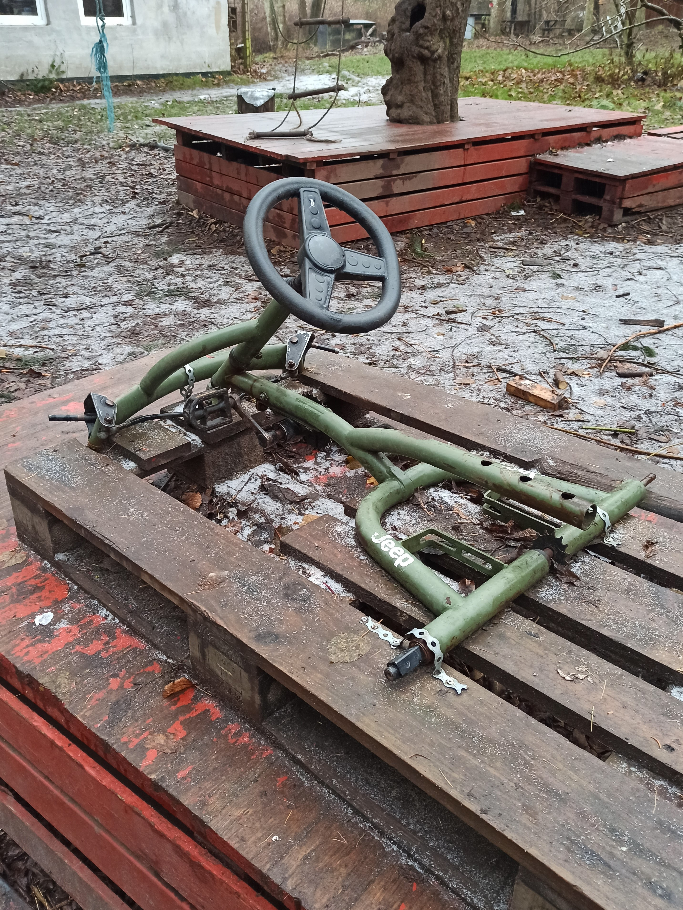
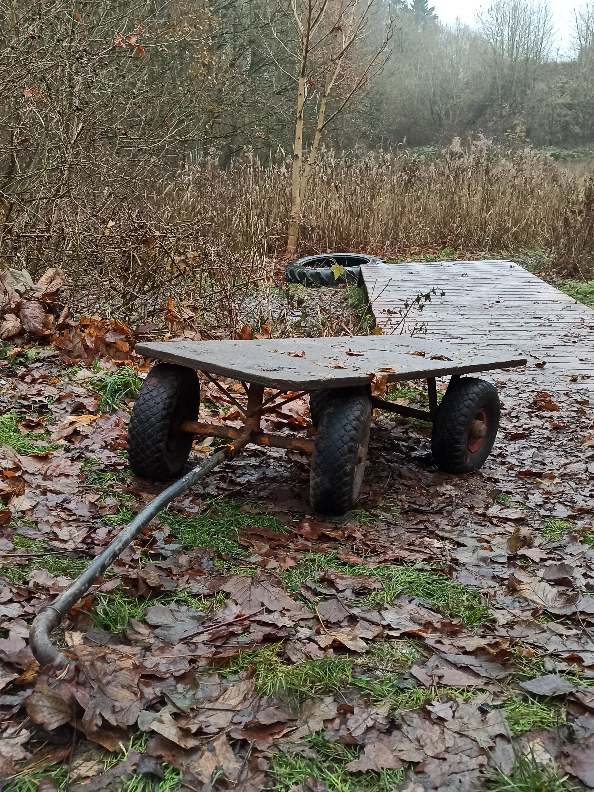
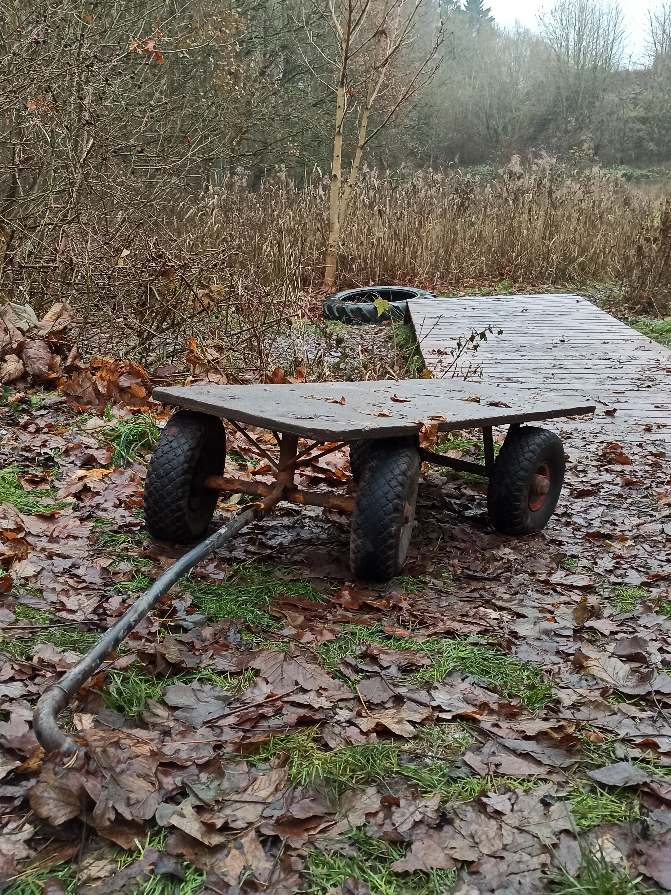
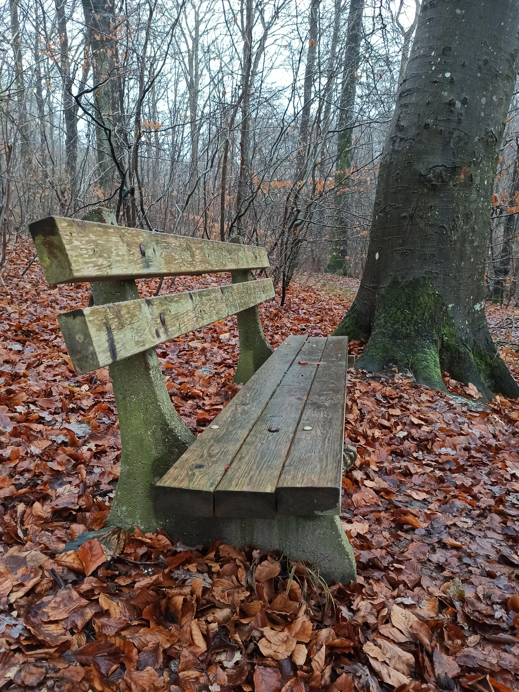
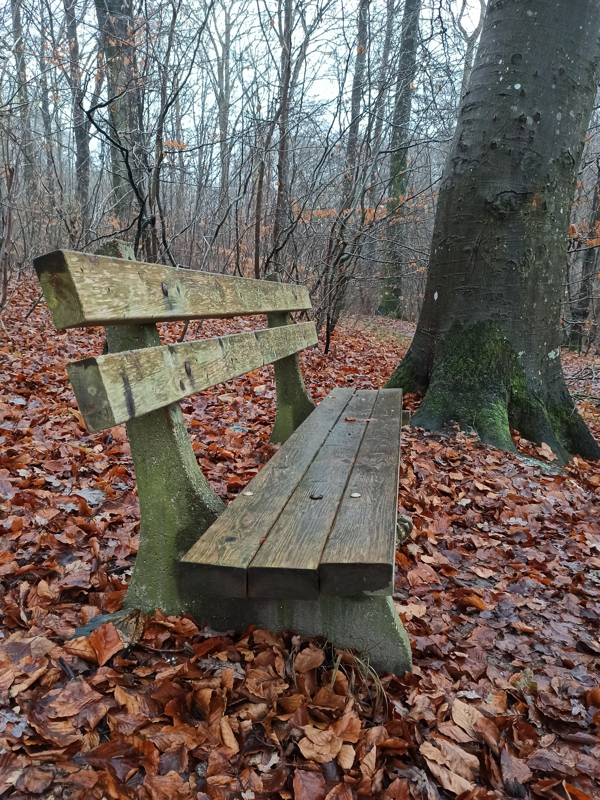

Success

You have successfully signed up for our newsletter and will receive an email whenever we share details of a new hidden place.

Great for the young or young at heart!
Explore a small loop round the forest (10-15 mins), an outdoor play area, camp in the shelter or enjoy time round the campfire.
Here you may meet the pet rabbits, or the friendly cat, Cirkeline.
The area is often used for outdoor schooling by Bakke school in Hørning.
Only 1.4km to Hørning station.
Fregerslevvej 24, 8362 Hørning
56.07744, 10.03025
Current temperature
Feels like
Wind speed
 





 

 



Plenty to keep us busy whenever we visit. Many happy hours spent here with the family.
We really enjoyed toasting marshmallows around the fire on our camping trip.
This kids and I love exploring here, building dens and swinging in the hammocks!

A 5 km long trail, including wooden figures related to the Old Testement

Explore the forest and hilly landscape around Kollens Mølle
Share your suggestions of places to discover in and around Hørning